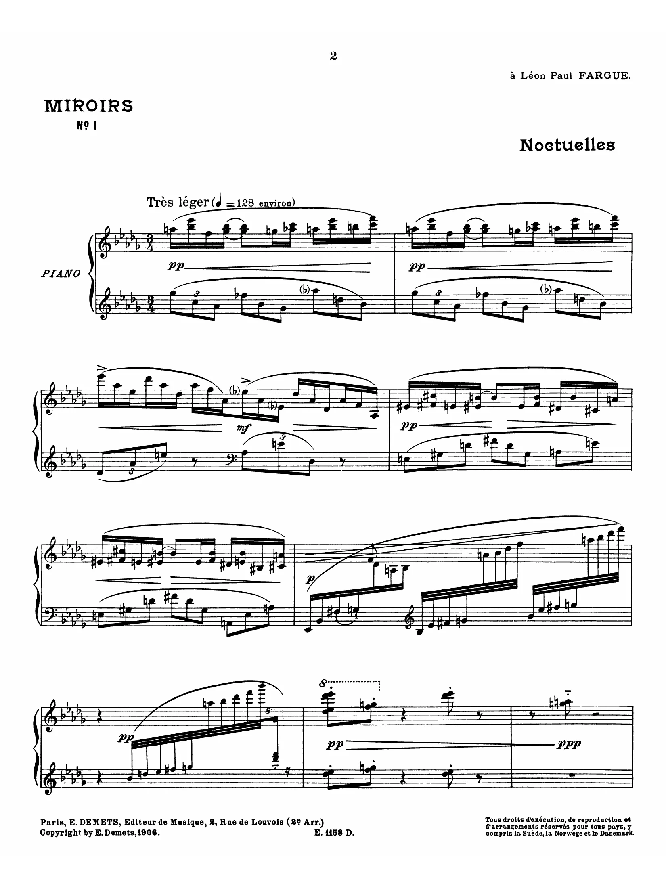
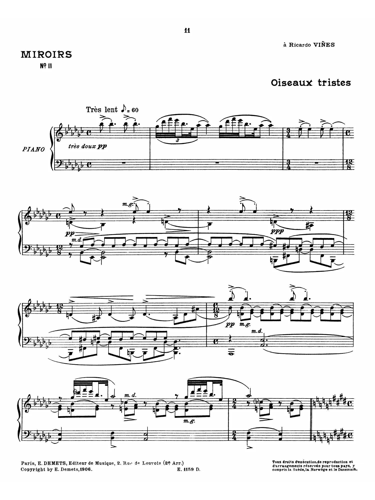

Music pioneer · Modern · Composer arrangement studio
Maurice Ravel
Listen to “Boléro” ↗ Detroit Symphony Orchestra
Play Ravel’s complete 1913 Prélude, then explore two opening studies from Miroirs: “Noctuelles” (the five metered opening bars) and “Oiseaux tristes” (bars 1–7, including the accompaniment’s entrance). The Miroirs studies were prepared from the public-domain 1906 E. Demets edition. The Noctuelles study stops before the free runs; Oiseaux tristes retains the upper calls and lower-staff accompaniment while omitting the middle right-hand voice. Open the original pages below to compare notation and follow the complete score. Compare flickering rhythmic figures, sparse bird calls, and changing chord colors using piano, selected-voice and instrument arrangements. These piano works complement the orchestral-color experiment below. Read along, slow down, loop a passage, or isolate a hand. Playback uses sampled or synthesized instruments.
Arranging with care
A source staff is not always the melody: in an orchestral score, find the staff carrying the theme. A two-part piano study pairs your selected voice with a source bass; it is not a concert reduction and wide leaps may need redistribution. Saxophone notation is transposed while playback stays at concert pitch. Violin parts stay at concert pitch and are moved by octaves to sit above the open G string. Guitar tab preserves pitch and rhythm but may need a different octave or fingering. Original ensembles are available only where the source contains those parts. Piano reductions and original classroom studies retain their source identities.
Recordings: Nicholaus P. Brosowsky’s Tonejs-Instruments sample collection, CC BY 3.0; VSCO 2 Community Edition, CC0. Sample credits and processing.
Read the 1906 source pages
Open either page to enlarge it for class discussion. The printed pages preserve Ravel’s complete texture and expressive markings; the classroom player identifies its excerpt and reductions separately. The first edition was published by E. Demets in Paris.


Music pioneer · Modern
Sound experiment: repetition and orchestral color
Keep the pitches and rhythm fixed while switching between two synthetic tone colors. Describe what changed without saying “higher” or “faster.”
This is an original classroom demonstration of a musical idea, not an excerpt or recording of the composer’s work.
Choose a version, then press Play.
Life and context
Maurice Ravel (1875–1937).
Ravel was a French composer known for precise craftsmanship in piano and orchestral music. His work draws on dance, Spanish musical influences, and, in some later works, jazz.
Repetition and orchestral color
In Boléro, a repeated rhythmic pattern and returning melodies support a gradual orchestral crescendo. Changes of instrument and texture make repetition feel like a process of discovery.
Guided listening
Choose a performance of one of these works. Listen once for its overall character, then again for the detail in the prompt.
- Noctuelles, from Miroirs: play the five-bar metered opening study above. Listen for the quick figures and compare the two hands.
- Oiseaux tristes, from Miroirs: play the seven-bar study above. Hear the accompaniment enter at bar 4 and the high call return at bar 7; then compare a complete performance.
- Boléro: track each new instrumental entrance and the growing volume.
- Ma mère l’Oye: compare the piano-duet and orchestral versions.
- Piano Concerto in G: listen for jazz-influenced gestures alongside lyrical writing.
Practice and reflection
- Play both sound examples. Describe one feature that changes and one that stays the same.
- How can repetition create tension even when a melody stays the same?
- Create a four-note idea at the piano. Make two versions using today’s musical idea, then explain your choices to a partner.
Check your listening
Keep the pitches and rhythm fixed while switching between two synthetic tone colors. Describe what changed without saying “higher” or “faster.” A useful answer names a feature you can hear and explains its effect. More than one interpretation is possible.
Copy your notes before leaving this page; they are not saved.